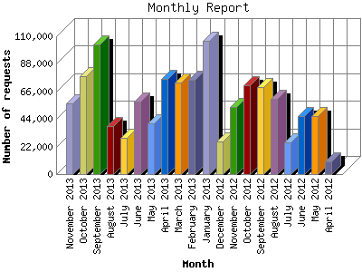

The Monthly Report identifies activity for each month in the report
time frame. Remember that each page hit can result in several server requests
as the images for each page are loaded.
Note: Depending on the
report time frame, the first and last months may not represent a complete
month's worth of data, resulting in lower hits.

| Month | Number of requests | Number of page requests | |
|---|---|---|---|
| 1. | April 2012 | 9,822 | 1,511 |
| 2. | May 2012 | 46,662 | 8,972 |
| 3. | June 2012 | 46,574 | 7,231 |
| 4. | July 2012 | 25,064 | 5,152 |
| 5. | August 2012 | 59,966 | 8,609 |
| 6. | September 2012 | 69,741 | 9,625 |
| 7. | October 2012 | 70,610 | 9,711 |
| 8. | November 2012 | 53,810 | 7,734 |
| 9. | December 2012 | 25,889 | 6,632 |
| 10. | January 2013 | 106,291 | 12,495 |
| 11. | February 2013 | 74,932 | 9,951 |
| 12. | March 2013 | 73,197 | 12,434 |
| 13. | April 2013 | 76,279 | 13,783 |
| 14. | May 2013 | 40,688 | 9,348 |
| 15. | June 2013 | 57,584 | 10,922 |
| 16. | July 2013 | 29,210 | 9,425 |
| 17. | August 2013 | 38,525 | 10,016 |
| 18. | September 2013 | 103,350 | 13,566 |
| 19. | October 2013 | 78,409 | 15,558 |
| 20. | November 2013 | 56,335 | 10,288 |
Most active month October 2013 : 15,558 pages sent. 106,291 requests handled.
Monthly average: 9,648 pages sent. 57,146 requests handled.
This report was generated on November 26, 2013 03:09.
Report time frame April 23, 2012 00:22 to November 25, 2013 23:48.
| Web statistics report produced by: analog 5.1 / Report Magic 2.21 |